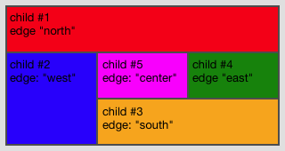

Dock¶
Docks children to one of the edges.
Preview Image¶

Features¶
- Percent width for left/right/center attached children
- Percent height for top/bottom/center attached children
- Minimum and maximum dimensions
- Prioritized growing/shrinking (flex)
- Auto sizing
- Margins and Spacings
- Alignment in orthogonal axis (e.g. alignX of north attached)
- Different sort options for children
Description¶
The Dock layout attaches the children to the edges of the availble space. The space distribution respects the child order and starts with the first child. Every added child reduces the available space of the other ones. This is important because for example a left attached child reduces the available width for top attached children and vice-versa. This layout is mainly used for the basic application layout structure.
Layout properties¶
- edge (String): The edge where the layout item should be docked. This may be one of north, east, south, west or center. (Required)
- width (String): Defines a percent width for the item. The percent width, when specified, is used instead of the width defined by the size hint. This is only supported for children added to the north or south edge or are centered in the middle of the layout. The minimum and maximum width still takes care of the elements limitations. It has no influence on the layout's size hint. Percents are mainly useful for widgets which are sized by the outer hierarchy.
- height (String): Defines a percent height for the item. The percent height, when specified, is used instead of the height defined by the size hint. This is only supported for children added to the west or east edge or are centered in the middle of the layout. The minimum and maximum height still takes care of the elements limitations. It has no influence on the layout's size hint. Percents are mainly useful for widgets which are sized by the outer hierarchy.
Alternative Names¶
- BorderLayout (Qt)
- DockPanel (XAML)
- BorderLayout (Java)
- BorderLayout (ExtJS)
Demos¶
Here are some links that demonstrate the usage of the layout:
API¶
Here is a link to the API of the layout manager: